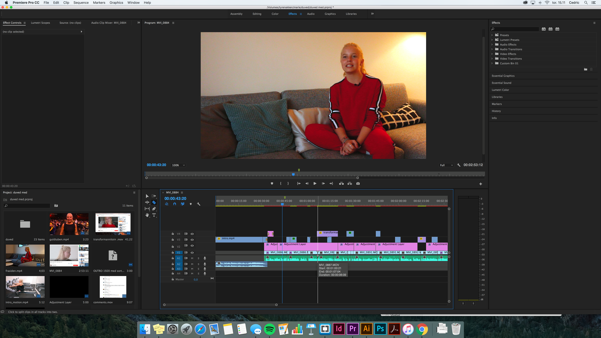

Everyday Project / CPH DOX
Intro
I vores anden opgave i grundlægende video fik vi opstillet en case af CPH DOX som hedder Everyday Project. Deres formål er at give et ansvarsfuldt alternativ af medier, end hurtigskrevende nyheder og strømmen af opdatering på sociale medier. Men de fokuserer samtidigt på at det skal være et læringsprojekt, med relativt frie rammer. Vi fik opstillet følgende krav: Overordnet tematik med #selvoptaget og #demokrati. Produktionen skal fokusere på interviewform af en almindelig persons liv. Det færdige produkt må ikke vare mere end 3 minutter. Vi skulle også lave en landingpage til vores endelige produktion.
Til vores endelige produkt valgte vi at interviewe en YouTuber der hedder Marie. Marie er vlogger og hendes vlog serie ‘Shape of You’ hvor hun dokumentere sit vægttab vandt årets serie til YouTube award showet guldtuben. Vores formål var at give et indblik i en YouTubers personlige udvikling. Vi ville prøve at få et indblik i hvordan det er at dele så personlige sager som vægttab på nettet for alle til at se.
Se det færdige resultat her
Proces
Vi har igennem her procesen overvejet filmiske og dramaturgiske virkemidler.
Projektets forløb:
- Finde interviewperson
- Research på interviewperson
- Udarbejde interview spørgsmål
- Valg af location og storyboard til vinkler på interview
- Filmning og lyd optagelse af interviewpersonen
- Udarbejde af historie udfra interview og tre aktsmodellen (etablering, uddybning og resolution)
- Redigering af produktet
- Post-produktion med optimering af billedsiden og lyd
- Etablering af landing page til det færdige produkt

Storyboard
Screenshot af redigering
Rolle
Jeg arbejdede i dette projekt sammen med mine medstuderende Mateo Güldner, Mikkel Lehmann og Cedric Lassen. Vi havde ikke nogle faste roller så jeg havde en indblanding i alle processer af projektets forløb.
Tools
I dette projekt har jeg arbejdet med:
Redigering programmer
- Premiere Pro
- Audition
Programmering
- Brackets
- HTML5
- CSS
Design
- Photoshop
- Illustrator
Optimering
Vi havde problemer med det var for mørkt på vores location, så vi vil altid tænke på lys i fremtidige projekter.
Vi havde også misforstået opgavens formål om at præsentere almindelige personer i deres hverdag. Så vi skulle have vinklet historien mere på hendes almindelighed, fremfor at hun vandt en pris.